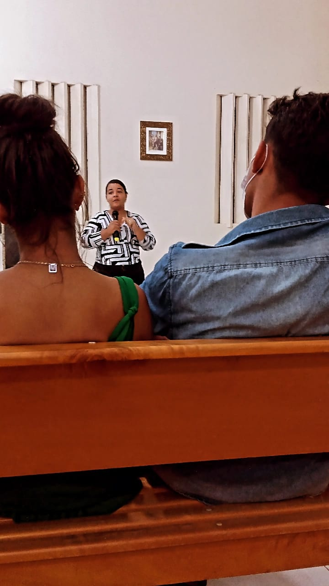
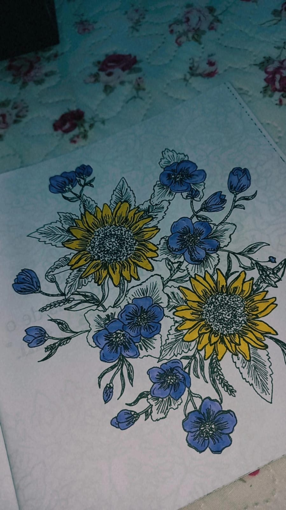
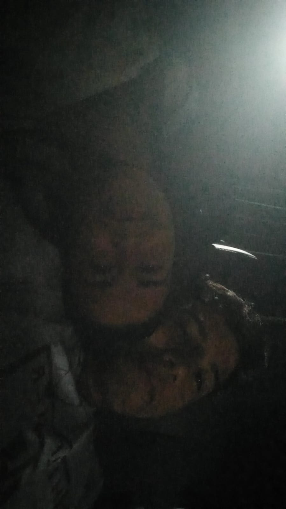
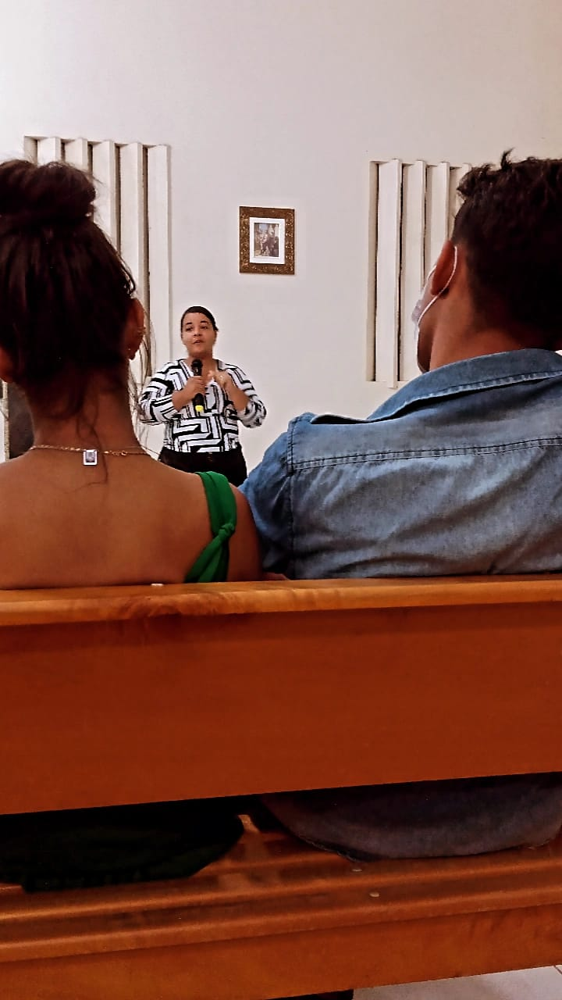
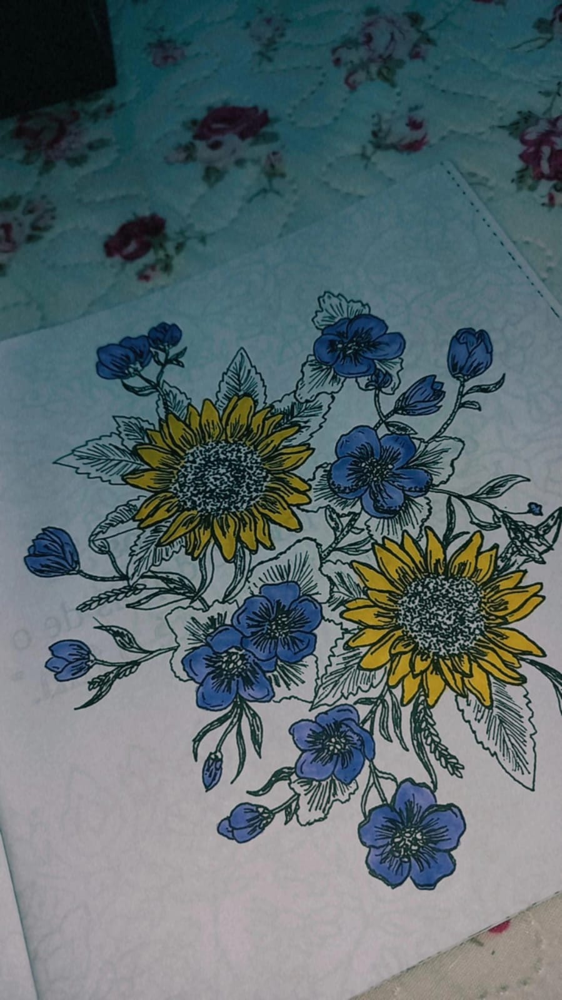
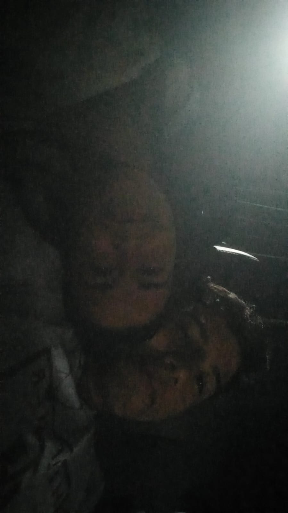
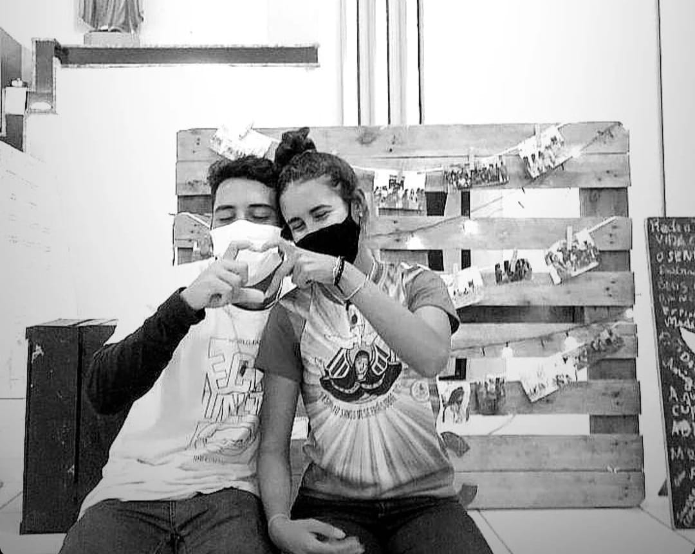

18 ANINHOS DE PURA BELEZA E GOSTOSURA
Samilinha, Meu amor, pensando aqui sobre parabenizar alguém por pela estar completando mais um ano de vida, notei que é loucura desejar parabéns apenas por isso. Acredito que ao parabenizar alguém, devemos parabenizar não apenas o fato de ser mais um ano de vivências, mas sim parabenizar pelo o que o outro é e representa para você.
Assim sendo, gostaria de iniciar te parabenizando pelo ser incrível que Deus me deu a oportunidade de conhecer, vossa pessoa me ensinou muito desde que nos conhecemos, eu perguntava coisas sobre a igreja, terço, rosário e você me explicava como era ou como você acreditava ser, enquanto eu tentava tirar alguns pequenos sorrisos de você nos pequenos intervalos que conversávamos, às vezes eu até conseguia, outras vezes você fazia isso com facilidade, apenas com seu jeitinho atrapalhado e genuíno. Ainda lembro de quando você falava, todas as vezes que me via, o quanto meus olhos estavam vermelhos e eu sempre falando que era porque dormi pouco, muitas vezes realmente era o sono, outras vezes era os choros devido o grande fardo que eu estava suportando da rotina exausta, mas por algum motivo estar com vocês, contigo em especial, fazia com que esse fardo se tornasse leve e imperceptível.
Mas verdade é que me sinto diferente quando estou contigo, isso é impressionante, o ruim, torna-se bom, a tristeza, torna-se alegria, os segredos, tornam-se diálogos, sabe o porquê? porque é você que faz com que isso seja assim, você se tornou uma peça importante na minha vida. Te parabenizo por ser quem és, a pessoa doce e meiga, que deixa uma leveza por onde passa, a menina que tem o sorriso mais lindo desse universo e a voz que acelera meu coração, o ser que tem o melhor cafuné do mundo e um olhar de tirar o fôlego, a princesa mais perfeita desse universo e a onça mais tentadora que vi, a Nina que ama crianças e que com certeza será a melhor mãe alguém poderia ter, a fedorenta mais cheirosa que já tive a oportunidade de cheirar e beijo mais doce de todos, a minha futura namorada que arrepia-me dos pés à cabeca com um simples carinho e que conseguiu fazer com que eu tivesse a confiança de conversar sobre qualquer coisa da minha vida, a minha companheira que me conta tudo de sua vida e que desejo tê-la ao meu lado em toda minha vida, a minha samilinha que sorri, chora e faz de tudo para estar comigo, a pessoa que eu mais amei em minha vida e a garota que se preocupa com quem ela ama e tenta melhorar como pode a situação, a jovem forte que apesar das dificuldades, das brigas e discussões, não perde a sua essência, simpatia e o sorriso no rosto de sempre.
Isto que falei não representa metade do que és verdadeiramente. Mas é por isso e por muito mais que eu posso afirmar solenemente o meu amor pelo o que você é, quem você é, o que você ainda será e quem você vai ser. Desejo o melhor para sua vida, desejo estar ao seu lado para te ver conquistando todos os seus sonhos e objetivos, suas vitórias e conquistas, caso não seja para eu estar contigos nesses momentos, tenha certeza que ficarei feliz e torcerei sempre por você. Nunca deixes às barreiras da vida te derrubar, se preciso for, direi 12²² vezes o quanto você é forte e capaz de vencer tudo, além de ser excepcionalmente especial para quem a ama, nunca esqueça-se disso.
Ladeado a ti é como quero passar minha vida. Parabenizo-te e agradeço-a por tudo que fizeste e fazes por mim, apesar de tudo que você passa, continuas segurando minha mão, demonstrando o seu amor e o carinho por esse cabeção que vos fala, pode ter certeza que eu enxergo isso nos pequenos detalhes, obrigado por tudo. Saiba, que estou aqui para tirar suas dúvidas, ouvir-te, preocupar-me com você, deixar-te feliz quando estiverdes triste, amá-la durante suas tempestades, alertá-la quando passardes dos limites, compreender-te, falar e escutá-la nos melhores e nos piores momentos.
EU AMO VOCÊ, SAMILE KELLY DA SILVA NUNES, Você é INCRÍVEL!. Sou seu eterno fã
